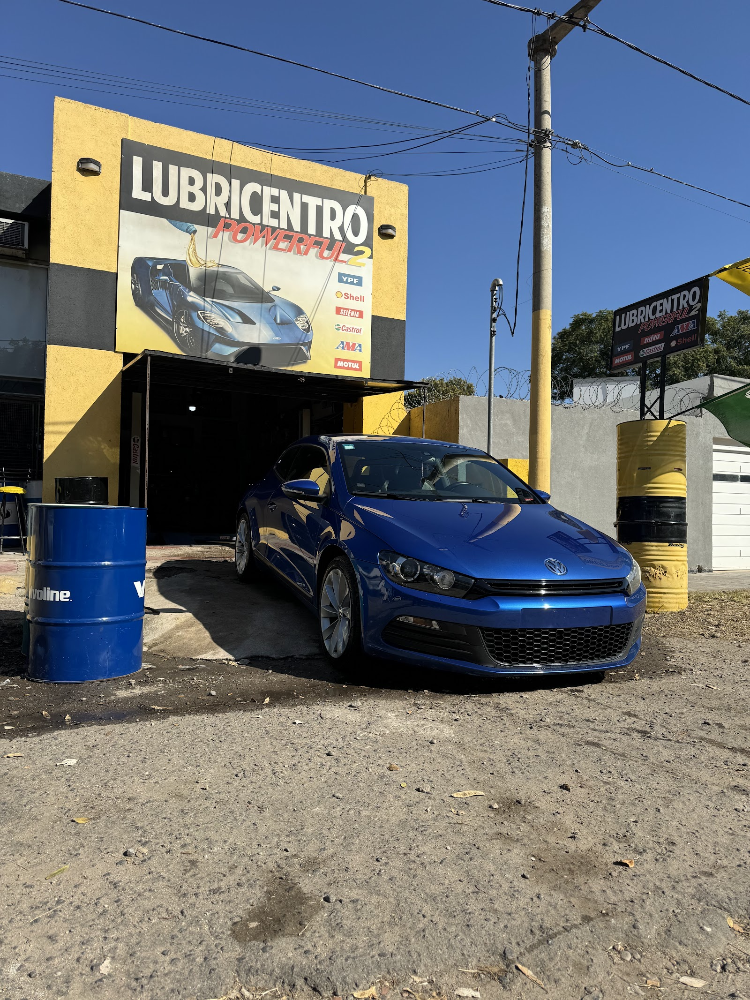
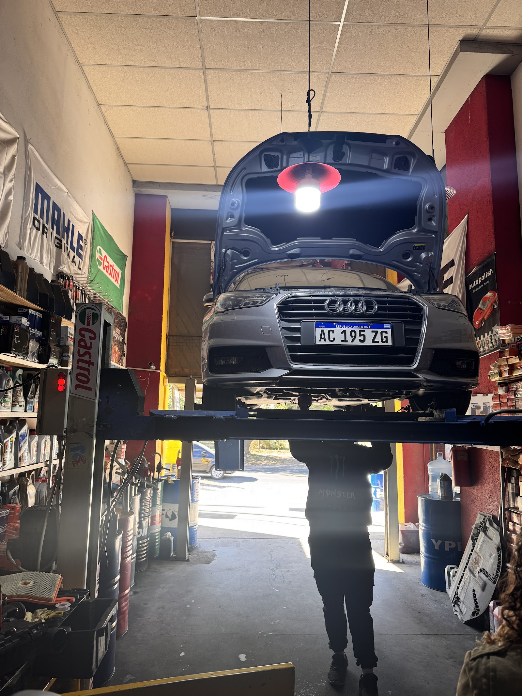
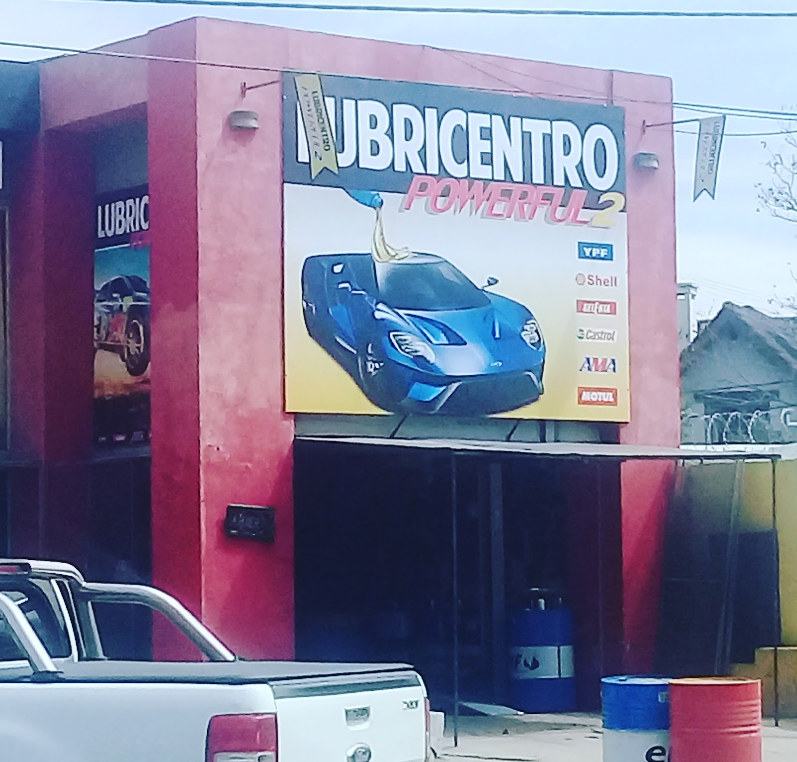

Ruta de tambores de aceite
Entrás con el aceite vencido, salís con el auto al día
Lubricentro Power Ful II atiende de lunes a sábado en Manuel Cardeñosa 3875, con 4.8 sobre 5 en 119 reseñas y las marcas que ves en su propia fachada: YPF, Shell, Castrol y Motul. La consulta empieza con modelo y kilometraje para ordenar el servicio antes de coordinar el turno.
Servicios de parada rápida
Lo que resolvés en una visita
Aceite, filtros y chequeo, con las marcas que se ven en la propia fachada. Cada servicio se conversa con los datos básicos del auto, para confirmar qué corresponde revisar y evitar vueltas cuando llegás al mostrador.
Cambio con datos del auto
Modelo y kilometraje primero, porque el producto se define desde el vehículo que traés y no desde una lista genérica.
Aceite y aire
Chequeo de consumibles para salir con el mantenimiento básico ordenado y una próxima parada más clara.
Mantenimiento rápido
Una revisión de mostrador para resolver lo necesario y volver a la ruta sin reorganizar todo el día.
YPF, Shell, Castrol, Motul
Visibles en la fachada y en el cartel del local, usadas como referencia de consulta antes del turno.

Diagnóstico rápido
De la llamada a la ruta de nuevo
Cuatro pasos que se resuelven parado frente al mostrador. La foto del auto en elevador funciona como prueba visual del trabajo dentro del taller: primero se confirma el dato del vehículo y después se coordina cómo seguir.
- 01Contar modelo y kmDatos básicos del auto
- 02Confirmar productoSegún marca disponible
- 03Coordinar turnoLunes a sábado
- 04Salir al díaMantenimiento resuelto
Reseñas de ruta
Atención rápida, sin vueltas
Tres reseñas públicas coinciden en la misma experiencia: buena atención, precios valorados por clientes y recomendación directa. El resultado que importa es simple: llegar con una consulta de mantenimiento y salir con el auto al día.
“Excelente atención. Muy amables y muy buenos precios. 100% recomendables.!”
Marina Cervera
“Excelente atención de Seba, lo recomiendo.”
Natali Quipildor
“Exelente atención, muy buenos precios, recomendables 100%.”
Juan Brandalise

Contacto directo
Llamá o pasá por el lubricentro
Teléfono, dirección y horario extendido sin vueltas. Manuel Cardeñosa 3875, X5009EXU Córdoba, Argentina. Lunes a viernes de 8:30 a 20:00, sábados de 9:00 a 17:00. Domingo cerrado. Contanos tu consulta por teléfono, pasá el modelo y kilometraje, y confirmá el turno antes de acercarte al lubricentro.